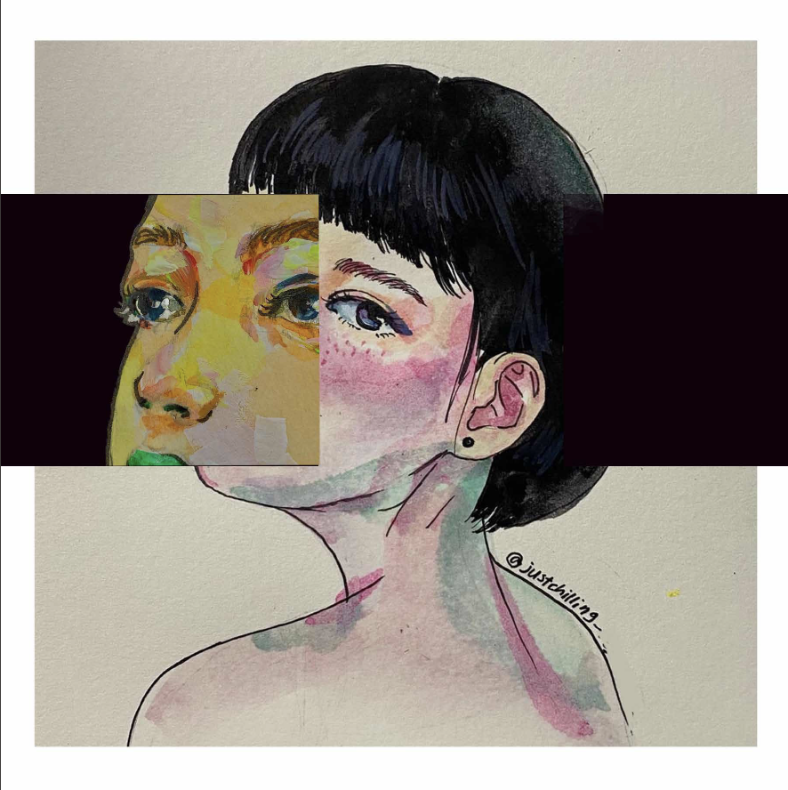
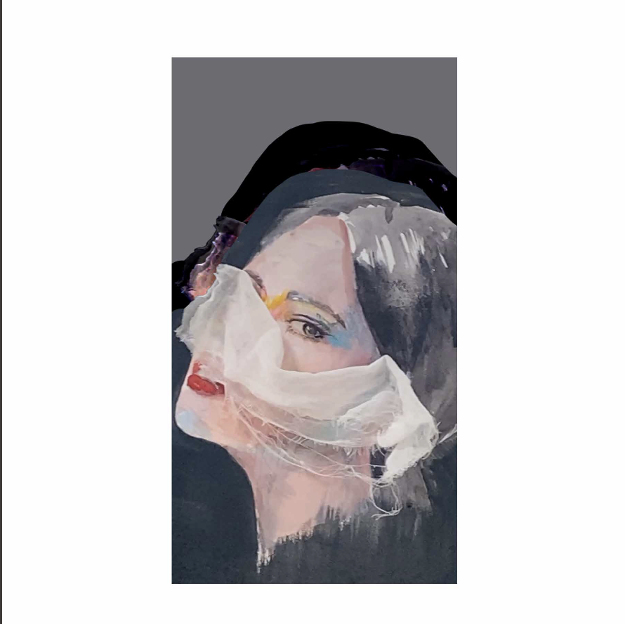
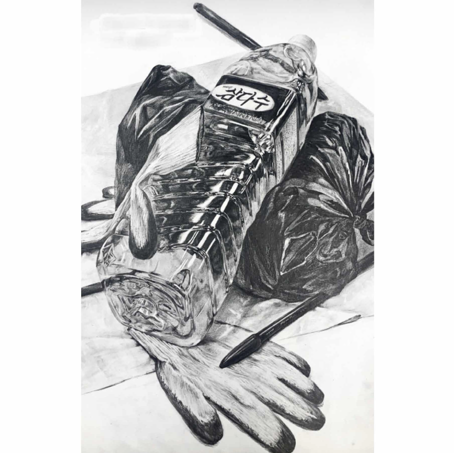

Gerbera
(Mixed media on Kent paper)
The gerbera, a perennial plant belonging to the daisy family
and known
for its resilience to cold, has the symbolic meaning of
'An Unsolvable Mystery.'
This flower was chosen as the title of
the work because the piece was inspired
by a period of
self-reflection and introspection. As I portrayed myself in this work,
I found myself continuously contemplating my own identity.
After grappling with various uncertainties, I decided to conclude that,
during this turbulent time, my sense of self was an unsolvable
mystery,
an open-ended conclusion that remains unresolved.

Gerbera_2
(Mixed media on Kent paper, digital drawing)
This piece, created around the same time as the first one,
also carries autobiographical significance. When I paint portraits,
I believe the eyes determine the mood and meaning of the work,
so I approach them with the utmost care. In this painting,
I wanted to express feelings of confusion and being lost
by depicting the gaze looking
in different directions.

Persona
(Mixed media on Kent paper, digital drawing)
The persona, a concept established by psychiatrist Carl Jung,
is formed by accommodating the demands of those around us.
While it helps maintain harmony in social life,
it can also lead to losing one's true self.
The irony of losing one's genuine identity due to
the persona created to hide oneself is depicted in this work.
By attaching white gauze to the canvas,
I sought to express how people in modern society are concealed
by external forces, without regard to their own will.

A scene featuring a Samdasoo water bottle,
a pair of work gloves, a black plastic bag, and a plus pen was
depicted in realistic detail.

I designed a play device inspired
by a retro phonograph, where a bell rings as a marble is released.